ஆன்மிக, ஒழுக்க, சமூக மேம்பாடு
“அவதூத தத்த பீடம், மனிதகுலத்தின் சமூக, ஒழுக்க, ஆன்மிக நலனுக்கான உலகப் புகழ்பெற்ற நிறுவனமாகும்.” சக உயிர்களிடம் மக்களுக்குள்ள சமூகப் பொறுப்பை ஸ்ரீ ஸ்வாமிஜி அவர்கள் நினைவூட்டுகிறார்கள்.
ஸ்ரீ ஸ்வாமிஜியின் பணிஒலி
புல்லாங்குழல்: இந்த இணையதளத்துக்கான புதிய ராக இசையமைப்பு
பஹாடி ராகம்
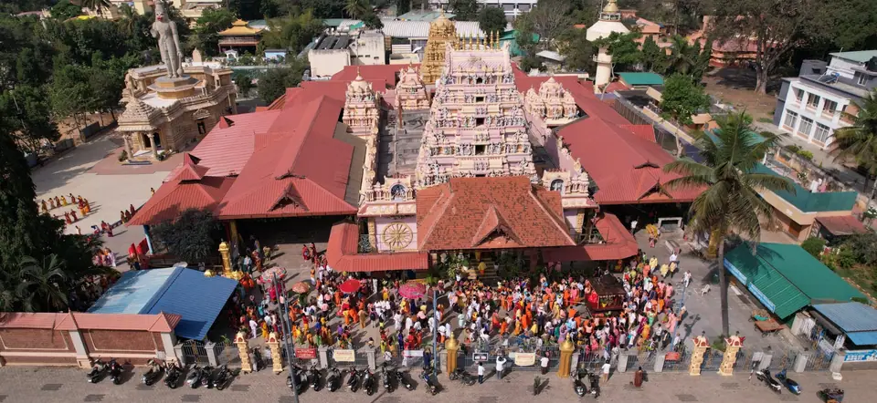
மனிதகுலத்தின் சமூக, ஒழுக்க, ஆன்மிக மேம்பாட்டுக்கு அர்ப்பணிக்கப்பட்ட, சர்வதேச அளவில் போற்றப்படும் ஒரு நிறுவனம் — சாமுண்டி மலையின் அடிவாரத்தில் 40 ஏக்கர் பரப்பில்.
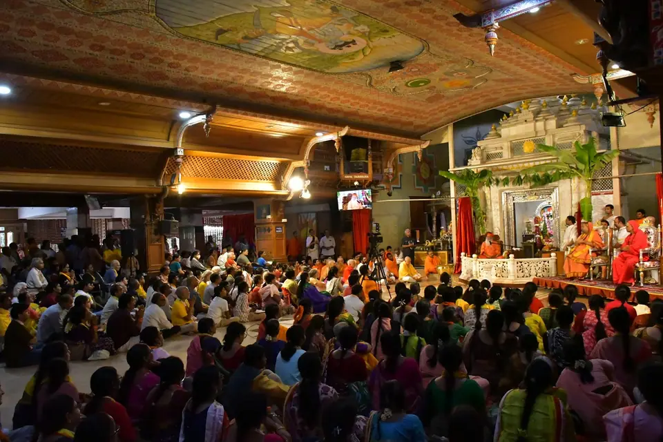
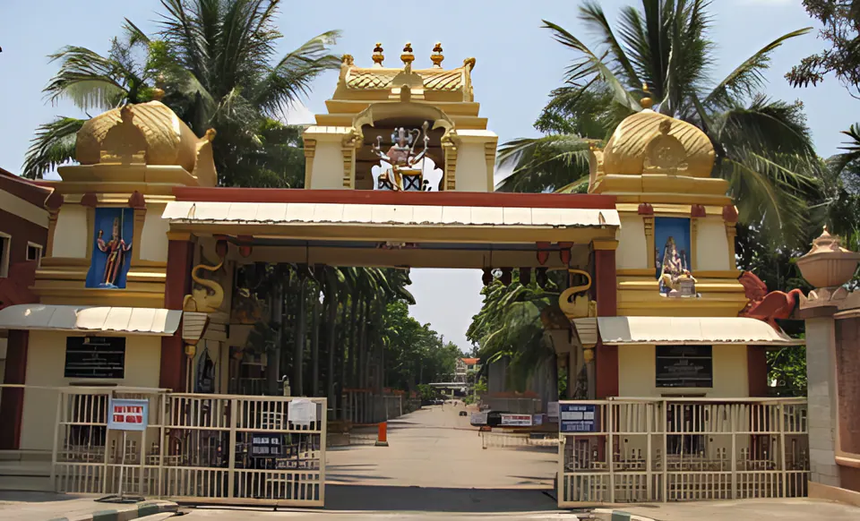
1966-ஆம் ஆண்டு, ஸ்ரீ ஸ்வாமிஜி அவர்கள் ஊட்டி சாலையில் உள்ள மைசூரு ஆசிரமத்தின் தற்போதைய இடத்திற்குக் குடிபெயர்ந்தார்கள்; தொடக்க நாட்களில் அங்கே ஒரு வயலில் வைக்கோல் குடிசை ஒன்று மட்டுமே இருந்தது. அந்த நிலம் தரிசாகவும், நாகப்பாம்புகளும் தேள்களும் நிறைந்ததாகவும் இருந்தது; இந்த உயிரினங்கள் சுற்றிலும் ஊர்ந்துகொண்டிருக்க, ஸ்ரீ ஸ்வாமிஜி அவர்கள் மரங்களின் அடியில் வெறுந்தரையில் உறங்கினார்கள். அவர்களுக்கு ஒருபோதும் எந்தத் தீங்கும் நேரவில்லை.
அங்கே, மைசூருவில்தான் ஸ்ரீ ஸ்வாமிஜி அவர்கள் ஸ்ரீ கணபதி சச்சிதானந்த ஸ்வாமிஜி என்று அறியப்படலானார்கள். தங்கள் உலகியல் விவகாரங்களில் உதவி பெறவும், உடல் நோய்களிலிருந்து குணமடையவும், ஆன்மிகப் பயிற்சியில் வழிகாட்டுதல் பெறவும் மக்கள் பரம பூஜ்ய ஸ்வாமிஜி அவர்களை நாடி வந்தனர்.
இன்று தத்தர் கோயில் இருக்கும் இடத்தில் ஒரு காலத்தில் பெரிய மேடை ஒன்று இருந்தது. அது சரஸ்வதி பீடம் என்றும், சில நேரங்களில் நாராயண பீடம் என்றும் அழைக்கப்பட்டது. தத்தர் கோயில் கட்டப்பட்ட பிறகு, இந்த ஆசிரமம் அவதூத தத்த பீடம் என்று அழைக்கப்படலாயிற்று.
ஸ்ரீ கணபதி சச்சிதானந்த ஆசிரமம் என்று பரவலாக அழைக்கப்படும் இந்தப் பீடம், ஸ்ரீ ஸ்வாமிஜியின் பணியின் தலைமையகமாகும். ஆண்டுகள் செல்லச் செல்ல இது பெரும் சிறப்புடன் வளர்ந்து, ஆன்மிக வாழ்வின் பல அம்சங்களை உள்ளடக்கியுள்ளது: இங்கே யோகா, வேதங்கள், சம்ஸ்கிருதம், பஜனைகள், இசை எனப் பலவற்றையும் கற்கலாம்.
முதல் பிரதிஷ்டையிலிருந்து புதிய சன்னிதிகள் வரை, பீடத்தின் சொந்தப் பதிவுகளிலிருந்து முக்கிய மைல்கற்கள்.
ஸ்ரீ ஸ்வாமிஜியின் அவதார காலவரிசைஸ்ரீ ஸ்வாமிஜி அவர்கள் ஊட்டி சாலையில் உள்ள தற்போதைய இடத்திற்கு வருகிறார்கள் — அப்போது அது தரிசு நிலமான ஒரு வயலில் இருந்த வைக்கோல் குடிசை மட்டுமே. ஆசிரமம் நிறுவப்பட்டு, ஸ்ரீ சச்சிதானந்தேஸ்வரர் பிரதிஷ்டை செய்யப்படுகிறார்.
9 ஜூன் 1978 அன்று, ஒரு வாரம் நீடித்த விழாவின்போது, பகவான் தத்தர் ஸ்ரீ காலாக்னி சமன தத்தாத்ரேயராகப் பிரதிஷ்டை செய்யப்படுகிறார். தத்தர் கோயில் கட்டப்பட்ட பிறகு, இந்த ஆசிரமம் அவதூத தத்த பீடம் என்று அழைக்கப்படலாயிற்று. இலவச மருத்துவச் சேவைகளுக்காக எஸ்.ஜி.எஸ். மருத்துவமனை திறக்கப்படுகிறது.
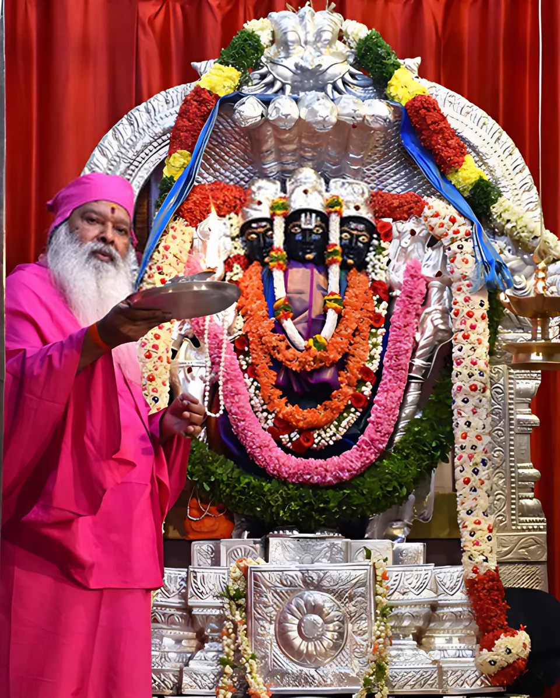
உலகப் பிரார்த்தனை மண்டபம் திறந்து வைக்கப்படுகிறது; பாரம்பரிய குருகுல முறையில் வேதங்களைக் கற்பிப்பதற்காக 1985-இல் எஸ்.ஜி.எஸ். வேத பாடசாலை நிறுவப்படுகிறது.
31 மே 1998 அன்று, இசை ஸ்வரங்களின் மண்டபமான நாத மண்டபத்தை ஸ்ரீ ஸ்வாமிஜி அவர்கள் திறந்து வைக்கிறார்கள். அதைத் தொடர்ந்து 1999-இல் ஸ்ரீ தத்த வெங்கடேஸ்வர க்ஷேத்திரமும், 2000-இல் தர்மத் தூணும் அமைகின்றன.
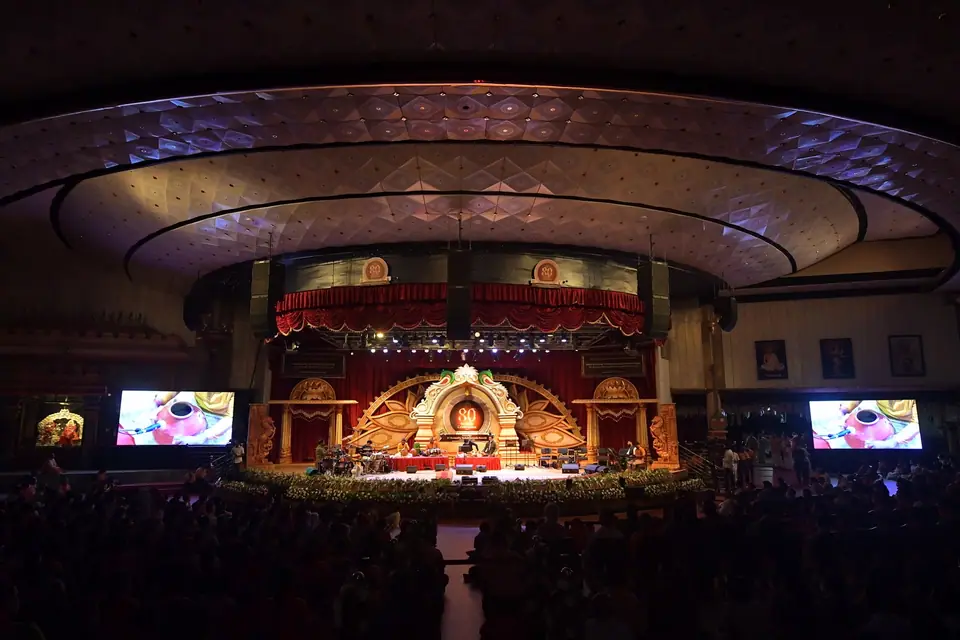
ராம நவமி நாளான 21 ஏப்ரல் 2002 அன்று, பகவான் தத்தரின் விக்கிரகம் பிரார்த்தனை மண்டபத்தின் மையத்திற்கு இடமாற்றம் செய்யப்பட்டு மறுபிரதிஷ்டை செய்யப்படுகிறது.
2005-இல் கிஷ்கிந்தா மூலிகா போன்சாய் தோட்டம் திறக்கப்படுகிறது; அதைத் தொடர்ந்து 2006-இல் விஸ்வம் அருங்காட்சியகமும் சப்தரிஷி சரோவரமும் அமைகின்றன.
ஸ்ரீ ஸ்வாமிஜியின் 70-ஆவது வயதில், பறவைகளுக்கான மறுவாழ்வு மையமான சுக வனம் நிறுவப்படுகிறது; 70 அடி உயரக் காரிய சித்தி ஹனுமான் சிலை பிரதிஷ்டை செய்யப்படுகிறது.
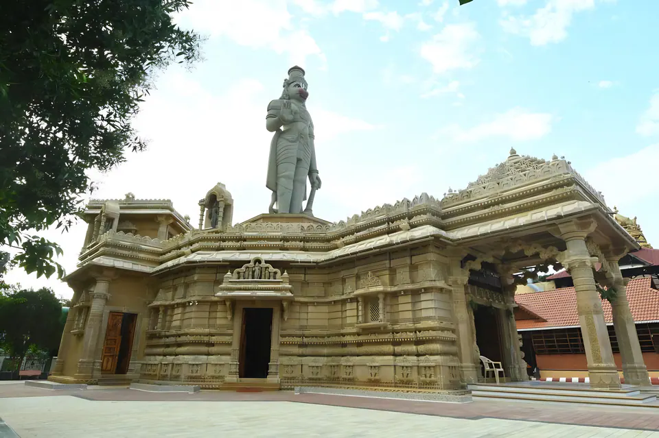
1966-இல் ஆசிரமம் தொடங்கியபோது சாமுண்டி மலையை நோக்கி ஒரு சுரங்கப்பாதை சென்ற இடத்தில், 14 டிசம்பர் 2016 அன்று சைவ ஆகம முறைப்படி எட்டு பைரவர் விக்கிரகங்கள் பிரதிஷ்டை செய்யப்படுகின்றன.
28 டிசம்பர் 2023 அன்று, ஸ்ரீ ஸ்வாமிஜி அவர்கள் ராஜராஜேஸ்வரி அம்பாளின் கோயிலைப் பிரதிஷ்டை செய்து, 2,108 அரிய சாளக்கிராமங்கள் உறையும் ஹரி சன்னிதியைத் திறந்து வைக்கிறார்கள்.
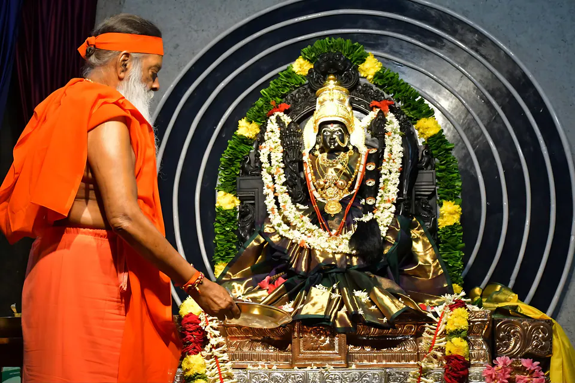
இந்தியா முழுவதும் 80-க்கும் மேற்பட்ட கிளைகள் — பகவான் தத்தாத்ரேயரின் 16 அவதாரங்களுக்கான 16 ஆசிரமங்கள் உட்பட — மேலும், பீடத்தின் பட்டியலின்படி, இந்தியாவுக்கு வெளியே பதினொரு நாடுகளில் மையங்கள்; அவற்றுள் ஐக்கிய இராச்சியம், அமெரிக்கா, மலேசியா, டிரினிடாட், கனடா, ஆஸ்திரேலியா ஆகியவையும் அடங்கும்.
மனிதநேயம் என்பதே அவர்களின் மதம், இசை என்பதே அவர்களின் மொழி, மேலும் பக்தி என்பதே அவர்களின் வழிமுறை.
மைசூரு அவதூத தத்த பீடமும், அதன் சமூகப் பணிப் பிரிவான ஸ்ரீ தத்த ஹ்யூமேன் சர்வீசஸும் நிலைகொண்டிருக்கும் கொள்கைகள் இவையே என்று ஸ்ரீ ஸ்வாமிஜி அவர்கள் பலமுறை தெளிவுபடுத்தியுள்ளார்கள்.
அவதூத தத்த பீடம், 1966-ஆம் ஆண்டு பரம பூஜ்ய ஸ்ரீ கணபதி சச்சிதானந்த ஸ்வாமிஜி அவர்களால் நிறுவப்பட்ட ஒரு சர்வதேச ஆன்மிக, கலாச்சார, சமூக நல அமைப்பாகும். அதன் பல்வேறு திட்டங்கள் ஒவ்வொரு மனித உயிரின் உள்ளார்ந்த மதிப்பை அங்கீகரிப்பதை மையமாகக் கொண்டவை.
பீடத்தின் இதயத்தில் இருப்பவர் பகவான் தத்தாத்ரேயர்; சத்குரு, அதாவது பரம ஆசான் எனும் தத்துவத்தின் உருவமான மூலவர் அவரே. நித்திய ஆசானாகிய தத்தாத்ரேயர், சத் (இருப்பு), சித் (ஞானம்), ஆனந்தம் (பேரின்பம்) எனும் மும்மைத் தத்துவத்தின் வெளிப்பாடு ஆவார்.
உலகியல் வாழ்வின் நிழல்களிலிருந்து அகத்தின் ஆன்ம ஒளி நோக்கிய பயணத்தில் அவர் சாதகர்களை வழிநடத்துகிறார். ஸ்ரீ ஸ்வாமிஜி அவர்கள் தத்தாத்ரேய அவதூதரின் உபதேசங்களைப் பரப்புவதால், ஆசிரமத்தில் ஒரு தத்தர் கோயில் கட்டப்பட்டுள்ளது — இந்தியாவிலும் வெளிநாடுகளிலும் நிறுவப்பட்ட பல தத்தர் கோயில்களில் இதுவே முதலாவது.
பகவான் தத்தாத்ரேயரின் உலகளாவிய சகோதரத்துவச் செய்தி
“அவதூத தத்த பீடம், மனிதகுலத்தின் சமூக, ஒழுக்க, ஆன்மிக நலனுக்கான உலகப் புகழ்பெற்ற நிறுவனமாகும்.” சக உயிர்களிடம் மக்களுக்குள்ள சமூகப் பொறுப்பை ஸ்ரீ ஸ்வாமிஜி அவர்கள் நினைவூட்டுகிறார்கள்.
ஸ்ரீ ஸ்வாமிஜியின் பணி“வேதங்கள் தொன்மையான காலத்திலிருந்து நமக்குக் கிடைத்த விலைமதிப்பற்ற பாரம்பரியச் செல்வம்; அவை பாதுகாக்கப்பட்டுப் பரப்பப்பட வேண்டும்.” பாடசாலையில் நான்கு வேதங்களும் கற்பிக்கப்படுகின்றன; ஒவ்வோர் ஆண்டும் தேசிய அளவில் வேதத் தேர்வுகள் நடத்தப்படுகின்றன.
உபதேசங்கள்மருத்துவமனைகள், மருத்துவ முகாம்கள், பள்ளிகள், ஆசிரமத்திற்கு வரும் அனைவருக்கும் இலவசமாக உணவளிக்கும் அன்னதானம் ஆகியவற்றின் மூலம், மனிதகுலத்திற்குச் செய்யும் சேவையே இறைவனுக்குச் செய்யும் சேவை என்பதை ஸ்ரீ ஸ்வாமிஜி அவர்கள் மீண்டும் மீண்டும் நமக்கு நினைவூட்டுகிறார்கள்.
சேவைஇறைநம்பிக்கையில் ஐயம் கொண்டவர்கள், நாத்திகர்கள், எந்த மதத்தைச் சேர்ந்தவர்கள் உட்பட அனைவரையும் ஸ்ரீ ஸ்வாமிஜி அவர்கள் வரவேற்கிறார்கள். சாதி, சமய நம்பிக்கை, இனம், மதம் என்ற தடைகள் இன்றி மனிதகுலத்திற்குச் சேவை செய்வதே குறிக்கோள்.
ஆசிரமத்திற்கு வருகை தாருங்கள்ஸ்ரீ ஸ்வாமிஜி அவர்கள் பரப்பும் முக்கிய வழிமுறைகளில் பஜனை பாடுவதும் ஒன்று; எனவே திவ்ய நாம சங்கீர்த்தனம் ஆசிரம வாழ்வின் அன்றாட அங்கமாகும் — ஆழ்ந்த ஒருமுகப்பாட்டுடன் பயிலப்படும் இசை ஒரு சிகிச்சையாகவே மாறுகிறது.
நாத சிகிச்சை“போன்சாய் மரங்களும் பறவைகளும் என் இரு கண்கள். நாதமே என் குரல். என் மூச்சே வேதம்.” — ஸ்ரீ ஸ்வாமிஜி. தாவரங்களையும் விலங்குகளையும் பாதுகாப்பதை ஸ்ரீ ஸ்வாமிஜி அவர்கள் பேரார்வத்துடன் ஊக்குவிக்கிறார்கள்: ஆசிரமத்தில் சுக வனம், போன்சாய் தோட்டம், கோசாலை, ராசிகளுடனும் நட்சத்திரங்களுடனும் தொடர்புடைய மரங்களின் தோட்டங்கள் ஆகியவை உள்ளன.
சிறப்பிடங்கள்அரச நகரமான மைசூருவில், சாமுண்டி மலையின் அடிவாரத்தில் 40 ஏக்கர் பரந்த நிலப்பரப்பில் ஆசிரமம் அமைந்துள்ளது. அதன் கோயில்கள், அரங்கம், தோட்டங்கள், பள்ளிகள், மருத்துவமனை ஆகியவை அருகருகே அமைந்துள்ளன.
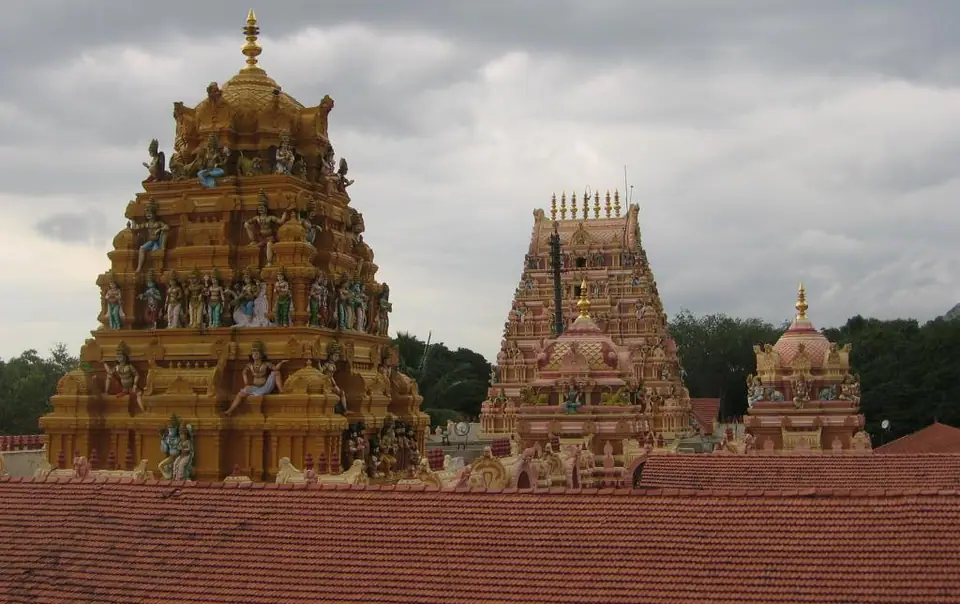
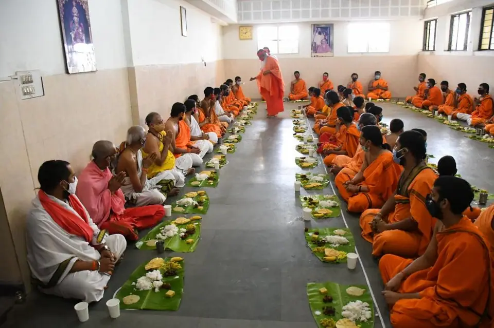
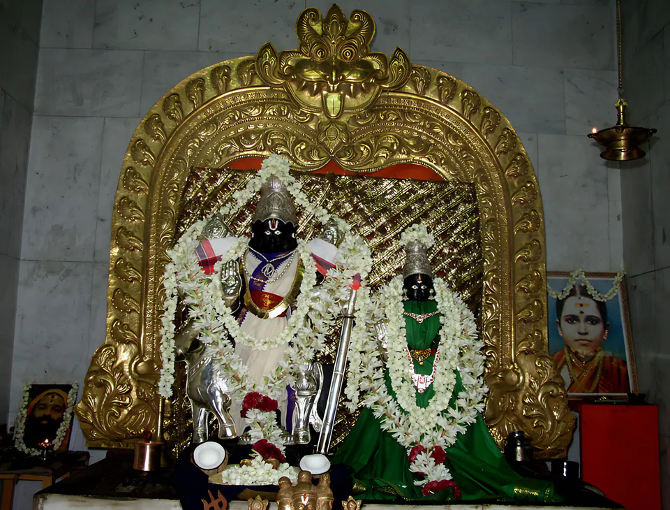
ஊடாடும் ஆசிரம வரைபடத்தில் வளாகத்தைச் சுற்றி வாருங்கள்.
குரு பரம்பரை என்பது குருமார்களின் இடையறாத தொடர்ச்சி, அதாவது வழிமரபு ஆகும். பீடத்தின் குரு பரம்பரைப் பிரார்த்தனை ஸ்ரீ கணபதிக்கும் சரஸ்வதி தேவிக்கும் வணக்கம் செலுத்தித் தொடங்கி, பகவான் தத்தாத்ரேயரின் அவதாரங்களான ஸ்ரீபாத வல்லபர், நரசிம்ம சரஸ்வதி முதல் நம் தற்போதைய குருவான ஸ்ரீ ஸ்வாமிஜி வரையிலான குருமார்களின் வழிமரபுக்கு வணக்கம் செலுத்துகிறது.
வருகையாளர்கள் வந்தடைந்ததும், வேத மந்திரங்களின் இதமான ஒலி எதிரொலிக்கும் அமைதியான, தூய்மையான சூழல் அவர்களைச் சூழ்ந்துகொள்கிறது. ஆசிரமத்தின் அமைதியான சூழலில் முழுமையாக ஆழ்ந்திட, வழிகாட்டியுடன் கூடிய ஆசிரமச் சுற்றுப்பயணத்தில் கலந்துகொள்ள வருகையாளர்கள் ஊக்குவிக்கப்படுகிறார்கள்.
பகவான் தத்தாத்ரேயருக்குத் தினமும் அபிஷேகம், அர்ச்சனை, அஷ்டோத்தர சேவை ஆகியவை நடைபெறுகின்றன.
ஊரில் இருக்கும்போது ஸ்ரீ ஸ்வாமிஜி அவர்களோ ஸ்ரீ பால ஸ்வாமிஜி அவர்களோ இதைச் செய்கிறார்கள். தீர்த்தம் வழங்கப்படுகிறது; பக்தர்கள் தத்த கிரியா யோகா பயிற்சி செய்கிறார்கள்.
ஹோமம், தைலாபிஷேகம் போன்ற வழிபாடுகளில் பக்தர்கள் கலந்துகொள்ளலாம், அவற்றுக்கு உபயமும் செய்யலாம். ஸ்ரீ பால ஸ்வாமிஜி அவர்கள் கன்னடத்திலும் தெலுங்கிலும் யோக வாசிஷ்டம் குறித்துத் தினமும் சொற்பொழிவு ஆற்றுகிறார்கள்.
குறைந்தது ஒன்றரை மணி நேரம் திவ்ய நாம சங்கீர்த்தனமும், பகவான் தத்தர் முன் பதினாறு தீபங்களுடன் காகட ஆரத்தியும்.
ஞாயிற்றுக்கிழமைகளில் ஸ்ரீ ஸ்வாமிஜி அவர்களுடன் சேர்ந்து பாடுவதற்காகத் தொலைதூரங்களிலிருந்து ஏராளமான பக்தர்கள் வருகிறார்கள். ஊரில் இருக்கும்போது ஸ்ரீ ஸ்வாமிஜி அவர்கள் ஞாயிறு காலைகளில் தரிசனம் அளிக்கிறார்கள்; ஒவ்வொரு ஞாயிற்றுக்கிழமையும் காலாக்னி சமன தத்தருக்குத் தைலாபிஷேகம் (எண்ணெய்க் காப்பு) செய்யப்படுகிறது.

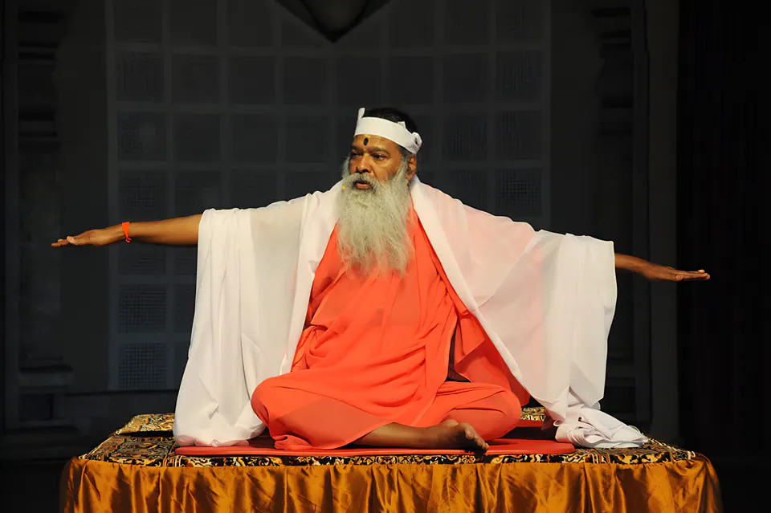
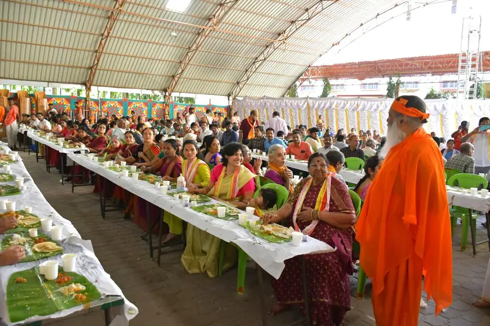
மகா சிவராத்திரி, ஸ்ரீ ஸ்வாமிஜியின் ஜன்மதினம், நவராத்திரி, தத்த ஜெயந்தி ஆகியவை ஆண்டின் மிகப் புனிதமான நிகழ்வுகள் — ஒவ்வொன்றும் வேதச் சடங்குகள், செவ்வியல் இசை, நடனம், பாரம்பரிய நாடகம் ஆகியவற்றின் சங்கமமாக, ஒரே முழுமையான வழிபாடாக அமைகிறது.
ஸ்ரீ சச்சிதானந்தேஸ்வரருக்கு ருத்ர அபிஷேகம், பக்தர்கள் கண்விழித்திருக்க இரவு நெடுநேரம் வரை இசை, அதிகாலை 3 மணிக்குச் சிவபெருமான் குறித்து ஸ்ரீ ஸ்வாமிஜியின் சொற்பொழிவு.
ஸ்ரீ பால ஸ்வாமிஜி அவர்கள் செய்யும் பிரத்யக்ஷ பாத பூஜை, மாற்றுத்திறனாளிகளுக்குச் சக்கர நாற்காலிகளும் நடைக் கருவிகளும், பெரிய அளவில் அன்னதானம்.
ராஜராஜேஸ்வரி அம்பாளுக்கு நவாவரண பூஜை, குமாரி பூஜை, தேவி ஹோமம், நாத மண்டபத்தில் இசை நிகழ்ச்சிகள்.
ஆதி குரு தத்தாத்ரேயரின் அவதார தினம் — பக்தர்கள் மூலவருக்குத் தைலாபிஷேகம் செய்யக்கூடிய ஆண்டின் ஒரே நாள்.
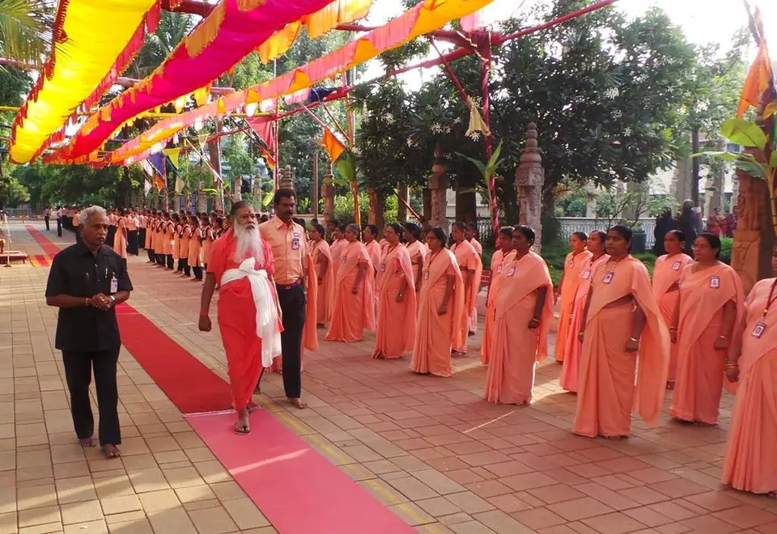
எஸ்.டி.எச்.எஸ். என்பது ஸ்ரீ ஸ்வாமிஜி அவர்களுக்கும், இந்தியாவிலும் வெளிநாடுகளிலும் உள்ள அவர்களின் ஆசிரமங்களுக்கும், அவை சார்ந்த சமூகத் திட்டங்களுக்கும் சேவை செய்ய அர்ப்பணிக்கப்பட்ட தன்னார்வலர் படை. இதன் தன்னார்வலர்கள் முக்கியச் சமூக-சமய நிகழ்வுகளின்போது யாத்ரிகர்களுக்கும், இயற்கைப் பேரிடர்களின்போது தேவையுள்ளோருக்கும் சேவை செய்கிறார்கள்.
எஸ்.டி.எச்.எஸ். தன்னார்வலராக இணையுங்கள்“நம் வாழ்வின் இறுதியில், நமக்காக எவ்வளவு சேர்த்தோம் என்பதல்ல, உலகுக்கு என்ன நன்மை செய்தோம் என்பதே முக்கியம்! பிறருக்குத் தேவையான நேரத்தில் அவர்களுக்குச் சேவை செய்வதிலேயே நிலையான மகிழ்ச்சி இருக்கிறது!”
ஸ்ரீ ஸ்வாமிஜி
கர்நாடகாவின் கலாச்சாரத் தலைநகரம் என்றும் போற்றப்படும் வரலாற்றுச் சிறப்புமிக்க மைசூரு நகரில், சாமுண்டி மலையின் அடிவாரத்தில் ஆசிரமம் அமைந்துள்ளது.
அனைத்து மதத்தினரும் வரவேற்கப்படுகிறார்கள். வசதிகள் குறைவாக இருப்பதால், வருகையாளர்கள் நகரத்திலுள்ள விடுதிகளில் தங்கி, ஆசிரம நிகழ்ச்சிகளுக்காக ஒவ்வொரு நாளும் ஆசிரமத்திற்கு வருமாறு கேட்டுக்கொள்ளப்படுகிறார்கள்.
பீடத்தின் வருகையாளர் வழிகாட்டுதல்களில் குறிப்பிட்டுள்ளபடி, ஆசிரமத்திலிருந்து தோராயமான தூரங்கள்.

ஆசிரமத்திற்கு வருகை தந்து அதன் பல்வேறு நிகழ்ச்சிகளில் பங்கேற்பது புதிய நம்பிக்கையை விதைக்கும், தன்னம்பிக்கையை வளர்க்கும், புத்துணர்வூட்டும் அமைதியைத் தரும்.